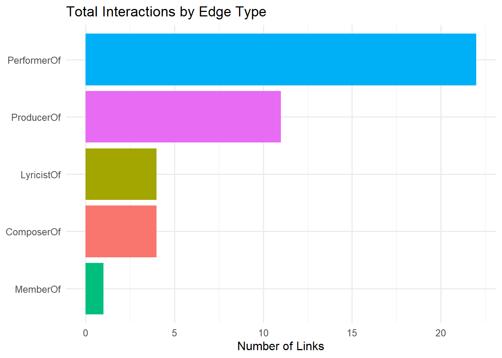

Code
pacman::p_load(tidyverse, jsonlite, SmartEDA, tidygraph, ggraph, visNetwork)Loading the R packages required.
pacman::p_load(tidyverse, jsonlite, SmartEDA, tidygraph, ggraph, visNetwork)In the code below, ‘fromJSON’ of jsonlite package is used to import MC1_graph.json file ino R.
kg <- fromJSON("data/MC1_graph.json")str(kg, max.level = 1)List of 5
$ directed : logi TRUE
$ multigraph: logi TRUE
$ graph :List of 2
$ nodes :'data.frame': 17412 obs. of 10 variables:
$ links :'data.frame': 37857 obs. of 4 variables:nodes_tbl <- as_tibble(kg$nodes)
edges_tb1 <- as_tibble(kg$links)ggplot(data = edges_tb1,
aes(y = `Edge Type`)) + geom_bar()
id_map <- tibble(id = nodes_tbl$id,
index = seq_len(
nrow(nodes_tbl)
))This ensures each id rom your node list is mapped to the correct row number.
edges_tb1 <- edges_tb1 %>%
left_join(id_map, by = c("source" = "id")) %>%
rename(from = index) %>%
left_join(id_map, by = c("target" = "id")) %>%
rename(to = index)edges_tb1 <- edges_tb1 %>%
filter(!is.na(from), !is.na(to))Lastly, ‘tbl_graph’ is used to create idygraph’s graph object by using the code chuk below.
graph <- tbl_graph(nodes = nodes_tbl,
edges = edges_tb1,
directed = kg$directed)set.seed(1234)ggraph(graph, layout = "fr") +
geom_edge_link(alpha = 0.3,
colour = "gray") +
geom_node_point(aes(color = `Node Type`),
size = 4) +
geom_node_text(aes(label = name),
repel = TRUE,
size = 2.5) +
theme_void()In this section, we are interested to create a sub-graph base on “Memberof” value in Edge Type column of he edges data frame.
graph_memberof <- graph %>%
activate(edges) %>%
filter(`Edge Type` == "MemberOf")used_node_indices <- graph_memberof %>%
activate(edges) %>%
as_tibble() %>%
select(from, to) %>%
unlist() %>%
unique()graph_memberof <- graph_memberof %>%
activate(nodes) %>%
mutate(row_id = row_number()) %>%
filter(row_id %in% used_node_indices) %>%
select(-row_id) # optional cleanupggraph(graph_memberof,
layout = "fr") +
geom_edge_link(alpha = 0.5,
colour = "gray") +
geom_node_point(aes(color = `Node Type`),
size = 1) +
geom_node_text(aes(label = name),
repel = TRUE,
size = 2.5) +
theme_void()# 1. Load & index the graph
kg_raw <- fromJSON("data/MC1_graph.json")
nodes_tbl <- as_tibble(kg_raw$nodes)
links_tbl <- as_tibble(kg_raw$links)
id_map <- nodes_tbl %>%
mutate(idx = row_number()) %>%
select(id, idx)
edges_idx <- links_tbl %>%
left_join(id_map, by = c("source" = "id")) %>% rename(from = idx) %>%
left_join(id_map, by = c("target" = "id")) %>% rename(to = idx) %>%
filter(!is.na(from), !is.na(to))
# 2. Keep only MemberOf edges and their nodes
member_edges <- edges_idx %>% filter(`Edge Type` == "MemberOf")
member_node_ids <- unique(c(member_edges$from, member_edges$to))
member_nodes <- nodes_tbl %>%
mutate(idx = row_number()) %>%
filter(idx %in% member_node_ids)
# 3. Build the visNetwork nodes df using the original idx as id
nodes_df <- member_nodes %>%
transmute(
id = idx, # must match edges 'from'/'to'
label = name,
group = `Node Type`,
title = paste0("<b>", name, "</b><br>Type: ", `Node Type`)
)
nodes_df <- nodes_df %>% arrange(label)
# 4. Build the edges df using the same idx values
edges_df <- member_edges %>%
transmute(
from = from, # matches nodes_df$id
to = to, # matches nodes_df$id
title = `Edge Type`
)
# 5. Render the network
visNetwork(nodes_df, edges_df, height = "600px", width = "100%") %>%
visNodes(shape = "dot", font = list(color = "black")) %>%
visEdges(arrows = "to") %>%
visOptions(
highlightNearest = list(enabled = TRUE, degree = 1),
nodesIdSelection = list(enabled = TRUE, useLabels = TRUE)
) %>%
visLegend(useGroups = TRUE, width = 0.1, position = "right")# first find Sailor Shift’s node index
ss_idx <- which(nodes_tbl$name == "Sailor Shift")
# pull only the MemberOf edges touching her
ss_edges <- edges_tb1 %>%
filter(`Edge Type` == "MemberOf") %>%
filter(from == ss_idx | to == ss_idx)
# rebuild a tiny graph of just those nodes + edges
ss_nodes <- nodes_tbl %>%
slice(unique(c(ss_edges$from, ss_edges$to)))
graph_ss <- tbl_graph(nodes = ss_nodes,
edges = ss_edges %>%
# remap 'from'/'to' to 1..nrow(ss_nodes)
mutate(
from = match(from, unique(c(ss_edges$from, ss_edges$to))),
to = match(to, unique(c(ss_edges$from, ss_edges$to)))
),
directed = TRUE)
# plot it
ggraph(graph_ss, layout = "fr") +
geom_edge_link(alpha = 0.7, colour = "gray50") +
geom_node_point(aes(color = `Node Type`), size = 4) +
geom_node_text(aes(label = name), repel = TRUE, size = 3) +
theme_void()
I will build an interactive network you can embed right in your Quarto HTML and let readers mouse-over nodes, zoom in on each artist’s “career path,” and color-code by node type (albums, songs, collaborators, etc.). Here’s a self-contained example you can drop into your Quarto doc, which:
I have picked the following three artists: Sailor Shift, Maya Jensen, and Lila “Lilly” Hartman).
Pulls out every node that’s either one of those artists or connected to them by a “MemberOf”, “ComposerOf” and “PerformerOf” edge.
Builds a tiny visNetwork graph showing their releases (sized by any “popularity” metric you have) and collaborations over time.
unique(edges_idx$`Edge Type`) [1] "InterpolatesFrom" "RecordedBy" "PerformerOf"
[4] "ComposerOf" "ProducerOf" "InStyleOf"
[7] "LyricalReferenceTo" "CoverOf" "DistributedBy"
[10] "MemberOf" "LyricistOf" "DirectlySamples" id_map <- nodes_tbl %>%
mutate(index = row_number()) %>%
select(id, index)
edges_idx <- links_tbl %>%
left_join(id_map, by = c("source" = "id")) %>% rename(from = index) %>%
left_join(id_map, by = c("target" = "id")) %>% rename(to = index) %>%
filter(!is.na(from) & !is.na(to))
# 2. Filter for your chosen edge types & artist
artists <- c("Sailor Shift")
edge_types <- c("MemberOf", "ComposerOf", "PerformerOf", "ProducerOf")
career_edges <- edges_idx %>%
filter(`Edge Type` %in% edge_types,
(from %in% which(nodes_tbl$name %in% artists)) |
(to %in% which(nodes_tbl$name %in% artists)))
# 3. Prune to only the nodes in those edges
career_node_ids <- unique(c(career_edges$from, career_edges$to))
career_nodes <- nodes_tbl %>% slice(career_node_ids)
# 4. Build visNetwork node DF
vn_nodes <- career_nodes %>%
mutate(
id = row_number(),
label = name,
group = `Node Type`,
title = paste0("<b>", name, "</b><br>Type: ", `Node Type`)
)
# 5. Build visNetwork edge DF with both label & title
id_lu <- tibble(old = career_node_ids, new = vn_nodes$id)
vn_edges <- career_edges %>%
inner_join(id_lu, by = c("from" = "old")) %>% select(-from) %>% rename(from = new) %>%
inner_join(id_lu, by = c("to" = "old")) %>% select(-to) %>% rename(to = new) %>%
transmute(
from,
to,
label = `Edge Type`, # drawn on the arrow
title = `Edge Type` # hover‐tooltip
)
# 6. Plot with edge‐labels
visNetwork(vn_nodes, vn_edges, height = "600px", width = "100%") %>%
visNodes(shape = "dot", font = list(color = "black")) %>%
visEdges(
arrows = "to",
labelHighlightBold = TRUE,
font = list(color = "blue", size = 7)
) %>%
visLegend(useGroups = TRUE, width = 0.1, position = "right")# 1. Load & index the graph
kg_raw <- fromJSON("data/MC1_graph.json")
nodes_tbl <- as_tibble(kg_raw$nodes)
links_tbl <- as_tibble(kg_raw$links)
id_map <- nodes_tbl %>%
mutate(index = row_number()) %>%
select(id, index)
edges_idx <- links_tbl %>%
left_join(id_map, by = c("source" = "id")) %>% rename(from = index) %>%
left_join(id_map, by = c("target" = "id")) %>% rename(to = index) %>%
filter(!is.na(from) & !is.na(to))
# 2. Filter for your chosen edge types & artist
artists <- c("Sailor Shift")
edge_types <- c(
"InterpolatesFrom","RecordedBy","InStyleOf",
"LyricalReferenceTo","CoverOf","DistributedBy","LyricistOf","DirectlySamples"
)
career_edges <- edges_idx %>%
filter(`Edge Type` %in% edge_types,
(from %in% which(nodes_tbl$name %in% artists)) |
(to %in% which(nodes_tbl$name %in% artists)))
# 3. Prune to only the nodes in those edges
career_node_ids <- unique(c(career_edges$from, career_edges$to))
career_nodes <- nodes_tbl %>% slice(career_node_ids)
# 4. Build visNetwork node DF
vn_nodes <- career_nodes %>%
mutate(
id = row_number(),
label = name,
group = `Node Type`,
title = paste0("<b>", name, "</b><br>Type: ", `Node Type`)
)
# 5. Build visNetwork edge DF with both label & title
id_lu <- tibble(old = career_node_ids, new = vn_nodes$id)
vn_edges <- career_edges %>%
inner_join(id_lu, by = c("from" = "old")) %>% select(-from) %>% rename(from = new) %>%
inner_join(id_lu, by = c("to" = "old")) %>% select(-to) %>% rename(to = new) %>%
transmute(
from,
to,
label = `Edge Type`, # drawn on the arrow
title = `Edge Type` # hover‐tooltip
)
# 6. Plot with edge‐labels
visNetwork(vn_nodes, vn_edges, height = "600px", width = "100%") %>%
visNodes(shape = "dot", font = list(color = "black")) %>%
visEdges(
arrows = "to",
labelHighlightBold = TRUE,
font = list(color = "blue", size = 7)
) %>%
visLegend(useGroups = TRUE, width = 0.1, position = "right")#── Ingest your graph data ────────────────────────────────────────────────────
kg_raw <- fromJSON("data/MC1_graph.json")
nodes_tbl <- as_tibble(kg_raw$nodes)
edges_tbl <- as_tibble(kg_raw$links)
#── Map source/target to row indices ──────────────────────────────────────────
id_map <- nodes_tbl %>%
mutate(index = row_number()) %>%
select(id, index)
edges_idx <- edges_tbl %>%
left_join(id_map, by = c("source" = "id")) %>% rename(from = index) %>%
left_join(id_map, by = c("target" = "id")) %>% rename(to = index) %>%
filter(!is.na(from) & !is.na(to))
#── Find the index for Ivy Echoes ─────────────────────────────────────────────
band_idx <- which(nodes_tbl$name == "Ivy Echos")
#── Pull all edges incident on Ivy Echoes ────────────────────────────────────
band_edges <- edges_idx %>%
filter(from == band_idx | to == band_idx)
# Optional: if you only want certain edge types, you can uncomment and adjust:
# band_edges <- band_edges %>%
# filter(`Edge Type` %in% c("MemberOf", "ComposerOf", "PerformerOf"))
#── Slice out all involved nodes ──────────────────────────────────────────────
band_node_ids <- unique(c(band_edges$from, band_edges$to))
band_nodes <- nodes_tbl %>% slice(band_node_ids)
#── Build the visNetwork nodes data frame ────────────────────────────────────
vn_nodes_band <- band_nodes %>%
mutate(
id = row_number(),
label = name,
group = `Node Type`,
value = 1
)
#── Remap edges to the new vn_node IDs ────────────────────────────────────────
id_lookup_band <- tibble(old = band_node_ids, new = vn_nodes_band$id)
vn_edges_band <- band_edges %>%
inner_join(id_lookup_band, by = c("from" = "old")) %>% select(-from) %>% rename(from = new) %>%
inner_join(id_lookup_band, by = c("to" = "old")) %>% select(-to) %>% rename(to = new) %>%
select(from, to, title = `Edge Type`)
#── Plot the static network ───────────────────────────────────────────────────
visNetwork(vn_nodes_band, vn_edges_band, height = "600px", width = "100%") %>%
visNodes(shape = "dot", scaling = list(min = 5, max = 30)) %>%
visEdges(arrows = "to") %>%
visLegend(width = 0.15, position = "right") %>%
visLayout(randomSeed = 123)#── Ingest your graph data ────────────────────────────────────────────────────
kg_raw <- fromJSON("data/MC1_graph.json")
nodes_tbl <- as_tibble(kg_raw$nodes)
edges_tbl <- as_tibble(kg_raw$links)
#── Map source/target to row indices ──────────────────────────────────────────
id_map <- nodes_tbl %>%
mutate(index = row_number()) %>%
select(id, index)
edges_idx <- edges_tbl %>%
left_join(id_map, by = c("source" = "id")) %>% rename(from = index) %>%
left_join(id_map, by = c("target" = "id")) %>% rename(to = index) %>%
filter(!is.na(from) & !is.na(to))
#── Define your five Ivy Echos members ────────────────────────────────────────
artists <- c(
"Sailor Shift",
"Maya Jensen",
'Lila "Lilly" Hartman',
"Jade Thompson",
"Sophie Ramirez"
)
#── Pull only the relevant edges for those artists ────────────────────────────
career_edges <- edges_idx %>%
filter(`Edge Type` %in% c("MemberOf", "ComposerOf", "PerformerOf","ProducerOf")) %>%
filter(
from %in% which(nodes_tbl$name %in% artists) |
to %in% which(nodes_tbl$name %in% artists)
)
#── Slice out all involved nodes ──────────────────────────────────────────────
career_node_ids <- unique(c(career_edges$from, career_edges$to))
career_nodes <- nodes_tbl %>% slice(career_node_ids)
#── Build visNetwork nodes df (uniform sizing) ───────────────────────────────
vn_nodes <- career_nodes %>%
mutate(
id = row_number(),
label = name,
group = `Node Type`,
value = 1
)
#── Remap edges to the new vn_node ids ────────────────────────────────────────
id_lookup <- tibble(old = career_node_ids, new = vn_nodes$id)
vn_edges <- career_edges %>%
inner_join(id_lookup, by = c("from" = "old")) %>%
select(-from) %>% rename(from = new) %>%
inner_join(id_lookup, by = c("to" = "old")) %>%
select(-to) %>% rename(to = new) %>%
select(from, to, title = `Edge Type`)
#── Plot ─────────────────────────────────────────────────────────────────────
visNetwork(vn_nodes, vn_edges, height = "600px", width = "100%") %>%
visNodes(shape = "dot", scaling = list(min = 5, max = 30)) %>%
visEdges(arrows = "to") %>%
visLegend(width = 0.1, position = "right") %>%
visLayout(randomSeed = 42)library(lubridate)
library(tidyr) # for unnest_wider()
# 1. Load & index graph (as before) -----------------------------
kg_raw <- fromJSON("data/MC1_graph.json")
nodes_tbl <- as_tibble(kg_raw$nodes)
links_tbl <- as_tibble(kg_raw$links)
ivy_id_map <- nodes_tbl %>%
mutate(ivy_row = row_number()) %>%
select(id, ivy_row)
ivy_edges <- links_tbl %>%
left_join(ivy_id_map, by = c("source" = "id")) %>% rename(from = ivy_row) %>%
left_join(ivy_id_map, by = c("target" = "id")) %>% rename(to = ivy_row) %>%
filter(!is.na(from), !is.na(to))
# 2. Get Ivy Echos members ---------------------------------------
band_idx <- which(nodes_tbl$name == "Ivy Echos")
member_idxs <- ivy_edges %>%
filter(`Edge Type` == "MemberOf", to == band_idx) %>%
pull(from)
member_names <- nodes_tbl$name[member_idxs]
# 3. Filter to their ComposerOf/PerformerOf and extract years ----
release_edges <- ivy_edges %>%
filter(`Edge Type` %in% c("ComposerOf","PerformerOf"),
from %in% member_idxs)
release_data <- release_edges %>%
mutate(
Artist = nodes_tbl$name[from],
Year = as.integer(nodes_tbl$release_date[to])
) %>%
filter(!is.na(Year))
# 4. Summarize & “complete” zero years ---------------------------
raw_counts <- release_data %>%
count(Artist, Year)
# determine full span of years in your dataset
year_span <- seq(min(raw_counts$Year), max(raw_counts$Year))
timeline_tbl <- raw_counts %>%
complete(
Artist = member_names,
Year = year_span,
fill = list(n = 0)
)
# 5. Plot with zeros shown ----------------------------------------
ggplot(timeline_tbl %>% mutate(Year_f = factor(Year)),
aes(x = Year_f, y = n, color = Artist, group = Artist)) +
geom_line(position = position_dodge(width = 0.5), size = 1) +
geom_point(position = position_dodge(width = 0.5), size = 3) +
scale_x_discrete(drop = FALSE) +
labs(
title = "Annual Output by Ivy Echos Members (Dodged)",
x = "Year",
y = "Number of Works",
color = "Artist"
) +
theme_minimal(base_size = 12) +
theme(axis.text.x = element_text(angle = 45, hjust = 1))
# 1. Load and index the graph
kg_raw <- fromJSON("data/MC1_graph.json")
nodes_tbl <- as_tibble(kg_raw$nodes)
links_tbl <- as_tibble(kg_raw$links)
id_map <- nodes_tbl %>%
mutate(idx = row_number()) %>%
select(id, idx)
edges_idx <- links_tbl %>%
left_join(id_map, by = c("source" = "id")) %>% rename(from = idx) %>%
left_join(id_map, by = c("target" = "id")) %>% rename(to = idx) %>%
filter(!is.na(from) & !is.na(to))
# 2. Identify all Person nodes
person_idxs <- which(nodes_tbl$`Node Type` == "Person")
person_names <- nodes_tbl$name[person_idxs]
# 3. Count works (composed or performed) per Person
works_tbl <- edges_idx %>%
filter(`Edge Type` %in% c("ComposerOf", "PerformerOf"),
from %in% person_idxs) %>%
mutate(Person = nodes_tbl$name[from]) %>%
count(Person, name = "Works") %>%
arrange(desc(Works))
# 4. Plot the top 10 busiest Persons
top_n <- 10 # change to nrow(works_tbl) to plot all
ggplot(works_tbl %>% slice_head(n = top_n),
aes(x = fct_reorder(Person, Works),
y = Works)) +
geom_col(fill = "steelblue") +
coord_flip() +
labs(
title = "Top Persons by Number of Composed/Performed Works",
x = NULL,
y = "Number of Works"
) +
theme_minimal(base_size = 12)